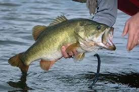

Hello my name is Jay Pasco, I am the coder for this website you see here
, cool huh?
Nothing to fancy but it is a start and will only progress from here. I enjoy to draw on my
spare time usually freestyling, or watching great films such as Intersellar,
Django Unchained or any strong story driven arcs with damaged characters to
give a feel of real life relatable properties to connect audiences' with so called film making.
One of my hobbies is going to the pier & fish for game, sometimes you get a bite or a few,
depends on your awareness and skills to get lure. Best thing about fishing
is that anyone can do it, effortlessly with the right bait and rod. Here is a quick list of what to
bring with you for your First Fishing Trip!
If you could visit any place in the world, where would you pick? For me personally
it would be Vencie, Italy. Venice has a rich history but most importantly Venice will not be here
forever. Inevitably it will be flooded by the Mediterranean sea by 2100. This will
be a dream of mine to, explore the vast beauty of Venice, which hopefully I can be welcomed
by the locals, becasue I do appreicate their culture.
Also not required but optional. Bring some scented hand
sanitizer if you're going to handle
live bait or frozen, it sure leaves a fishy smell.
It is a headache to get rid of without
a shower.
Click on the image below for a Youtube tutorial on how to tie knots for hooks, so you won't lose your line if you catch a heavy fish!

Hooking fish can be quite tricky because, you need to feel for it when your line is out the water already
I visted Puerto Rico back in summer 2017, senior in high school & living life, also visiting my family as well. Going to this tropical
paradise really put my life in perspective and made me want to travel to other countries, below is a google map
to check it out as well as a picture of myself with birds slapping my face in downtown Viejo San Juan
This is a calendar for users to keep up with their class schedule for CS 101 but also see when our lab is aslo starting within the week.
Lomo saltado is, in reality, a deeply thoughtful dish made with a set of ingredients and techniques that reflect the mix of cultures that contributed to its existence. It's an example of chifa cooking, a term that
describes the Chinese-Peruvian hybrid cuisine created by Chinese immigrants who moved to South America more than a century ago, as well as the restaurants where that food is served.
This particular dish combines indigenous
American ingredients, like potatoes,tomatoes, and peppers, with Chinese ingredients and techniques, like soy sauce and stir-frying. Some versions call for tossing the French fries directly into the wok to coat them in the sauce while
others put the fries on the side to maintain their crispy texture. My dad is from Peru so I, eat this dish often becaue my grandma knows I love it and she always make me it and sometimes with chicken which is called "Pollo Saltado".